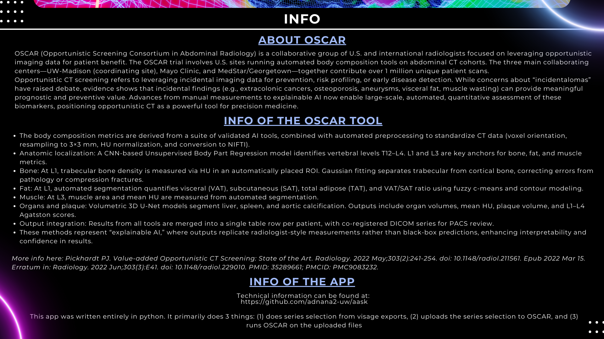
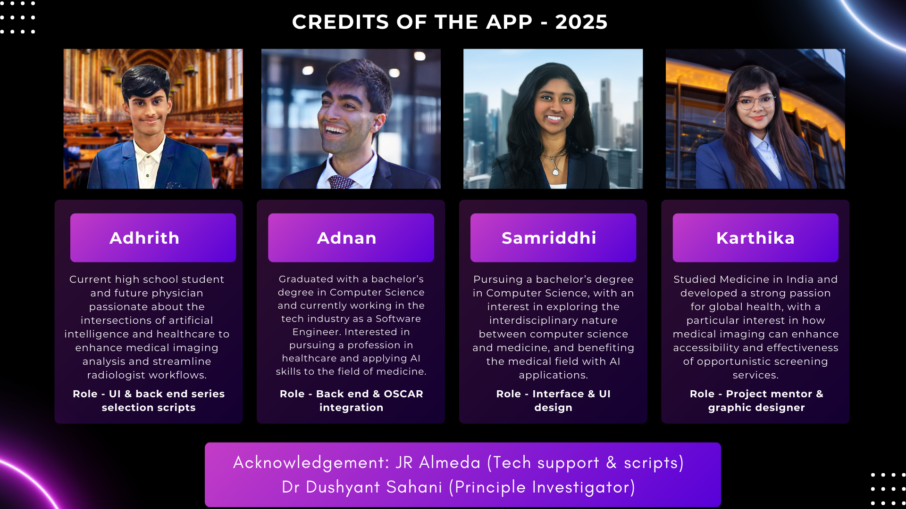

Status: Ready


To streamline medical imaging analysis by seamlessly integrating artificial intelligence into radiologist workflows, enhancing diagnostic efficiency and enabling opportunistic screening for better patient outcomes.